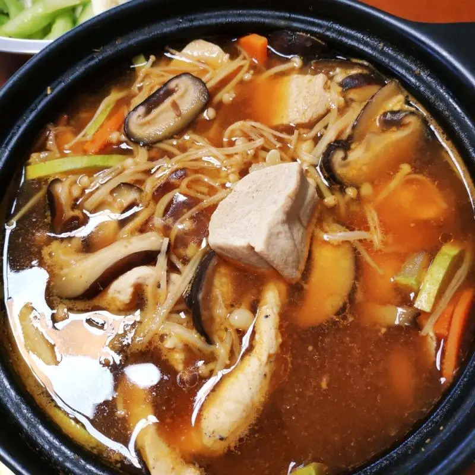

Recipe Detail
Recipe Detail
Doenjang Jjigae

Required ingredients
List of ingredients
- 2 tablespoons doenjang (Korean soybean paste)
- 1 tablespoon gochujang (Korean red pepper paste, optional)
- 4 cups water or anchovy stock
- 1 medium-sized zucchini, diced
- 1/2 medium-sized onion, thinly sliced
- 1/2 tofu block, cubed
- 2 green onions, chopped
- 1 green chili pepper, sliced (optional)
- 1 red chili pepper, sliced (optional)
- 2 cloves garlic, minced
Other
-
- Difficulty level: medium
- Required time: 20min
Steps
- In a pot, bring the water or anchovy stock to a boil.
- Add the doenjang to the boiling stock, stirring well to dissolve.
- Add the gochujang (if using) and mix until well combined.
- Add the zucchini, onion, potato (if using), and garlic. Let it simmer for about 10 minutes.
- Once the vegetables are halfway cooked, add the tofu, clams or mussels (if using), and the chili
peppers. Continue to simmer for another 5-7 minutes.
- When the clams or mussels have opened and the vegetables are tender, add the chopped green
onions.
- Let it simmer for another 2-3 minutes. Adjust seasoning if needed, adding more doenjang or a bit
of salt to taste.
- Remove from heat and serve hot, preferably with a bowl of steamed rice.